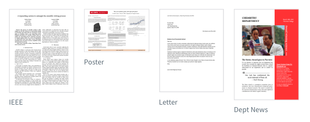

Introductie
Typst is een nieuw open-source systeem of documenten te schrijven, op te maken en er pdf-documenten van te maken. Het is nog maar zo’n drie jaar oud en wil net zoiets zijn als LaTeX, maar het wil ook makkelijker te gebruiken en te leren zijn. Met LaTeX heb ik meer gewerkt, maar als ik het een tijdje niet gedaan heb, kost het me veel tijd op te zoeken hoe het ook alweer werkt. Typst is te gebruiken als je essays, artikelen, boeken, rapporten of bv. huiswerkopgaven wilt maken. Net als LaTeX kun je er goed mathematische notaties mee schrijven, je kunt figuren en andere elementen toevoegen en de opmaak is naar jouw hand te zetten. Misschien dat Typst mij beter past, ook omdat je er vanuit Quarto mee kunt werken.
Dit is er zoal makkelijk mee te maken:

Opmaak van een stuk tekst
Op basis van de Typst-tutorial en de informatie van Quarto over Typst heb ik een recent stuk tekst genomen dat ik mooi wilde op maken. Hier zie je het eindresultaat: Voorbeeld.
Deze tekst komt uit mijn blog waarin ik regelmatig schrijf over Democratie en Onderwijs. Eind november schreef ik deze recensie over het boek De kracht van gras. Walt Whitman en onze tijd van Jan-Hendrik Bakker. Deze tekst wilde ik passend opmaken in Typst en Quarto. In deze map zit de file Richtlijnenvoordetoekomst.qmd waarmee deze tekst is opgemaakt. Een korte toelichting daarop:
In yaml
Dit staat in de yaml:
- title: “” (Titel hier weggehaald).
- lang: nl (taal toegevoegd om bibliografie in Ned te krijgen)
- format: typst (zo werkt het met Typst).
- bibliography: ref.bib (literatuurlijst toegevoegd).
Voordat tekst begint
Voor dat de tekst begint, heb ik enkele commondo’s voor Typst toegevoegd:
- informatie over de pagina (A5-formaat, de marges, de gele balk links).
- welk lettertype en de grootte ervan. (New Computer Modern, 11pt).
- iets over de paragraaf en regelafstand. \0.80em.
In de tekst zelf
In de tekst zelf heb ik ook enkele CSS-commando’s toegevoegd:
- grootte en kleur van de koppen. (bv {style=“font-size: 14pt; color: #cc6652”})
- de stijl van de inleiding :::{style=“font-size: 16pt; color: gray”}
Opmaak van een boek
In Quarto zijn, zoals gezegd, ook enkele formats gemaakt die je zo kunt gebruiken. Ik de vorige aflevering van Harrie's Hoekje liet ik zien hoe je met een format en inzet van Typst en Quarto een nieuwsbrief kunt maken.
Nu heb ik het format fiction gebruikt om een opzet te maken voor een boek dat ik voor ogen heb. Het format vind je hier. De opzet voor zo’n boek vind je hier. Dit is het boek. Hoe ik het heb gemaakt vind je hier